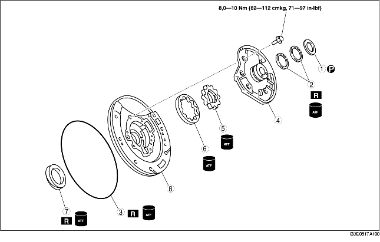

1. Die Vorprüfung vor dem Zerlegen durchführen.
(Siehe Vorprüfung der Ölpumpe.)
2. Die Zerlegung in der Reihenfolge der Tabelle durchführen.
3. Der Zusammenbau erfolgt in umgekehrter Reihenfolge der Zerlegung.

|
1
|
Anlaufscheibe
|
|
2
|
Dichtringe
|
|
3
|
O-Ring
|
|
4
|
Ölpumpendeckel
(Siehe Zerlegungshinweis für Ölpumpendeckel.)
|
|
5
|
Innerer Rotor
|
|
6
|
Äußerer Rotor
|
|
7
|
Wellendichtring
|
|
8
|
Ölpumpengehäuse
|
• Die Schrauben gleichmäßig in der gezeigten Reihenfolge lösen und den Ölpumpendeckel vom Ölpumpengehäuse abnehmen.
• Den inneren und äußeren Rotor markieren, ohne die Rotoren zu verkratzen oder einzudellen. Dann das Ölpumpengehäuse entfernen.
1. ATF auf einen neuen Wellendichtring auftragen und mit dem SST auf das Ölpumpengehäuse aufsetzen.
2. Den Abstand zwischen den Stirnflächen von Ölpumpengehäuse und Innen-/Außenrotoren an vier Stellen messen.
3. Den Abstand zwischen Innen- und Außenrotor messen.
4. Den äußeren und inneren Rotor mit ATF bestreichen.
5. Die Markierungen fluchten und den inneren und äußeren Rotor montieren.
6. Den Ölpumpenflansch einbauen.
7. Den Ölpumpendeckel auf das Pumpengehäuse schrauben.
8. Die Schrauben in der gezeigten Reihenfolge schrittweise festziehen.
9. ATF auf einen neuen O-Ring auftragen und auf dem Pumpengehäuse einsetzen.
10. ATF auf neue O-Ringe auftragen und in den Pumpendeckel einsetzen.